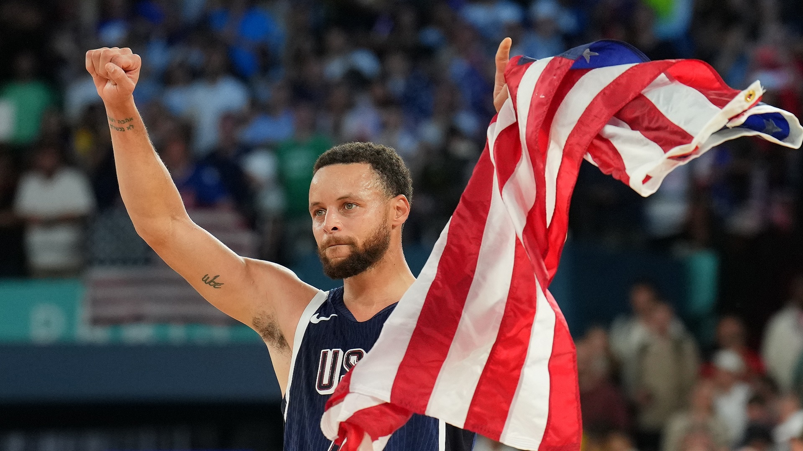
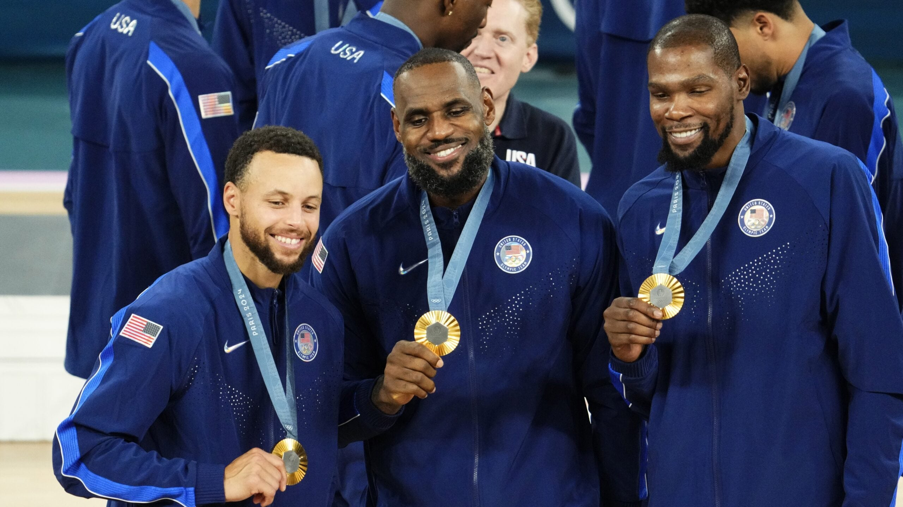
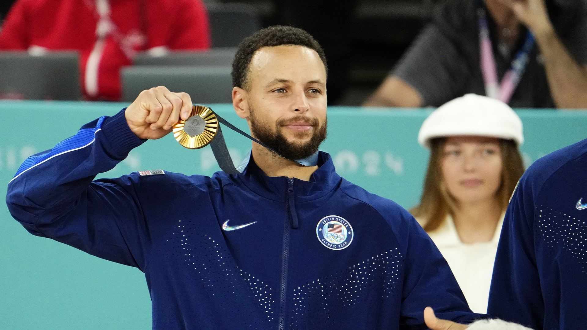

历史三分王 · 4×NBA总冠军 · 2×MVP · 奥运金牌 · 一人一城 17 季的金州图腾
追踪库里的每一步。本板块每日自动更新，数据来源为 NBA 官网、ESPN 及 The Athletic 等权威媒体。
1988年3月14日出生于俄亥俄州阿克伦，2009年首轮第7顺位被金州勇士选中。17个赛季、1065场常规赛——他亲手把篮球的进攻范围从 7 米推到了 14 米外，重新定义了一个位置。以下是截至 2025-26 赛季结束的真实生涯总账。
从一个被质疑脚踝玻璃属性的 7 号新秀，到把三分线变成自家后院的划时代射手。切换维度，逐季审视。
| 赛季 / 球队 / 荣誉 | 出场 | 得分 | 助攻 | 三分 | 投篮% | 三分% |
|---|
38 年人生、17 季征程，全部献给一座城市。向下滚动，沿时间之河横渡库里的整个故事。
在这个球星抱团、忠诚稀缺的时代，库里从未穿过其它战袍。三段王朝，四个总冠军，全部在金州甲骨文与旧金山大通中心。
2024 年 8 月 10 日，库里用 24 分、8 记三分——其中末节 2 分 43 秒内连中 4 记三分——把金牌挂上胸前。这是他第一枚、也是最被期待的一枚奥运金牌。



「对我来说能拿到金牌是一种疯狂的感觉。我感谢上帝给我机会去体验这一切。」
这支被外界称为「复仇者联盟」的队伍，由库里、勒布朗·詹姆斯、凯文·杜兰特领衔——巴黎周期前美国男篮刚在 2023 年 FIBA 世界杯四强不入。三人组在淘汰赛场均合计 53 分，未尝败绩。这是库里个人荣誉簿上最后一块缺失的拼图：现在他和詹姆斯、乔丹、魔术师、拉塞尔一样，成为同时拥有 NBA 总冠军 + MVP + 总决赛 MVP + 奥运金牌的全能先生。
他不只是篮球运动员——他是品牌（SC30、Curry Brand）、是公益符号（Eat. Learn. Play.）、是流行文化的横切面。库里让篮球与嘻哈、高尔夫、家庭生活前所未有地融合在一起。
全部图片取自 NBA 官方渠道（cdn.nba.com）真实赛场影像，含 2022 总决赛夺冠夜、2024 巴黎奥运夺金、2025 第 4000 记三分之夜等关键瞬间。点击可放大浏览。